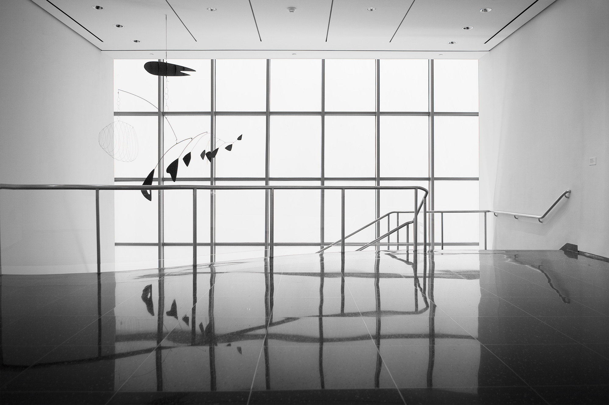

Museum of Modern Art
The Museum of Modern Art (MoMA) is an art museum located in Midtown Manhattan in New York City (on 53rd Street) between Fifth and Sixth Avenues. It has been important in developing and collecting modernist art, and is often identified as the most influential museum of modern art in the world.[2] The museum’s collection offers an overview of modern and contemporary art,[3] including works of architecture and design, drawing, painting, sculpture, photography, prints, illustrated books and artist’s books, film and electronic media.
The Library’s holdings include approximately 300,000 books and exhibition catalogs, over 1,000 periodical titles, and over 40,000 files of ephemera about individual artists and groups.[4] The archives holds primary source material related to the history of modern and contemporary art. MoMA also houses a restaurant, the Modern, run by Alsace-born chef Gabriel Kreuther.
History Introduction
The idea for The Museum of Modern Art was developed in 1929 primarily by Abby Aldrich Rockefeller (wife of John D. Rockefeller, Jr.) and two of her friends, Lillie P. Bliss and Mary Quinn Sullivan.[6] They became known variously as “the Ladies”, “the daring ladies” and “the adamantine ladies”. They rented modest quarters for the new museum in the Heckscher Building at 730 Fifth Avenue (corner of Fifth Avenue and 57th Street) in Manhattan, and it opened to the public on November 7, 1929, nine days after the Wall Street Crash. Abby had invited A. Conger Goodyear, the former president of the board of trustees of the Albright Art Gallery in Buffalo, New York, to become president of the new museum. Abby became treasurer. At the time, it was America’s premier museum devoted exclusively to modern art, and the first of its kind in Manhattan to exhibit European modernism.
Goodyear enlisted Paul J. Sachs and Frank Crowninshield to join him as founding trustees. Sachs, the associate director and curator of prints and drawings at the Fogg Museum at Harvard University, was referred to in those days as a collector of curators. Goodyear asked him to recommend a director and Sachs suggested Alfred H. Barr, Jr., a promising young protege. Under Barr’s guidance, the museum’s holdings quickly expanded from an initial gift of eight prints and one drawing. Its first successful loan exhibition was in November 1929, displaying paintings by Van Gogh, Gauguin, Cézanne, and Seurat.
First housed in six rooms of galleries and offices on the twelfth floor of Manhattan’s Heckscher Building, on the corner of Fifth Avenue and 57th Street, the museum moved into three more temporary locations within the next ten years. Abby’s husband was adamantly opposed to the museum (as well as to modern art itself) and refused to release funds for the venture, which had to be obtained from other sources and resulted in the frequent shifts of location. Nevertheless, he eventually donated the land for the current site of the museum, plus other gifts over time, and thus became in effect one of its greatest benefactors.
During that time it initiated many more exhibitions of noted artists, such as the lone Vincent van Gogh exhibition on November 4, 1935. Containing an unprecedented sixty-six oils and fifty drawings from the Netherlands, and poignant excerpts from the artist’s letters, it was a major public success and became “a precursor to the hold van Gogh has to this day on the contemporary imagination”.
1930s and 1940s
The museum also gained international prominence with the hugely successful and now famous Picasso retrospective of 1939–40, held in conjunction with the Art Institute of Chicago. In its range of presented works, it represented a significant reinterpretation of Picasso for future art scholars and historians. This was wholly masterminded by Barr, a Picasso enthusiast, and the exhibition lionized Picasso as the greatest artist of the time, setting the model for all the museum’s retrospectives that were to follow.
When Abby Rockefeller’s son Nelson was selected by the board of trustees to become its flamboyant president in 1939, at the age of thirty, he became the prime instigator and funder of its publicity, acquisitions and subsequent expansion into new headquarters on 53rd Street. His brother, David Rockefeller, also joined the museum’s board of trustees in 1948 and took over the presidency when Nelson was elected Governor of New York in 1958.
David subsequently employed the noted architect Philip Johnson to redesign the museum garden and name it in honor of his mother, the Abby Aldrich Rockefeller Sculpture Garden. He and the Rockefeller family in general have retained a close association with the museum throughout its history, with the Rockefeller Brothers Fund funding the institution since 1947. Both David Rockefeller, Jr. and Sharon Percy Rockefeller (wife of Senator Jay Rockefeller) currently sit on the board of trustees. In 1937, MoMA had shifted to offices and basement galleries in the Time-Life Building in Rockefeller Center. Its permanent and current home, now renovated, designed in the International Style by the modernist architects Philip L. Goodwin and Edward Durell Stone, opened to the public on May 10, 1939, attended by an illustrious company of 6,000 people, and with an opening address via radio from the White House by President Franklin D. Roosevelt.
1958 fire
On April 15, 1958, a fire on the second floor destroyed an 18 foot long Monet Water Lilies painting (the current Monet water lilies was acquired shortly after the fire as a replacement). The fire started when workmen installing air conditioning were smoking near paint cans, sawdust, and a canvas dropcloth. One worker was killed in the fire and several firefighters were treated for smoke inhalation. Most of the paintings on the floor had been moved for the construction although large paintings including the Monet were left. Art work on the 3rd and 4th floors were evacuated to the Whitney Museum of American Art which abutted it on the 54th Street side. Among the paintings that were moved was A Sunday Afternoon on the Island of La Grande Jatte which had been on loan by the Art Institute of Chicago. Visitors and employees above the fire were evacuated to the roof and then jumped to the roof of an adjoining townhouse.
Expansion from 1983 to present
In 1983 the Museum more than doubled its gallery and increased curatorial department by 30 percent, and added an auditorium, two restaurants and a bookstore in conjunction with the construction of the 53-story Museum Tower adjoining the museum.
In 1997 the Japanese architect Yoshio Taniguchi beat out ten other international architects to win the competition to execute the redesign of the museum. MoMA’s midtown location underwent extensive renovations in the early 2000s, closing on May 21, 2002, and reopening to the public in a building redesigned by Taniguchi along with Kohn Pedersen Fox, on November 20, 2004. From June 29, 2002, until September 27, 2004, a portion of its collection was on display in what was dubbed MoMA QNS, a former Swingline staple factory in Long Island City, Queens. The expansion, including an increase in MoMA’s endowment to cover operating expenses, cost $858 million in total. The project nearly doubled the space for MoMA’s exhibitions and programs and features 630,000 square feet (59,000 m2) of new and redesigned space. The Peggy and David Rockefeller Building on the western portion of the site houses the main exhibition galleries, and The Lewis B. and Dorothy Cullman Education and Research Building on the eastern portion provides over five times more space for classrooms, auditoriums, teacher training workshops, and the museum’s expanded Library and Archives. These two buildings frame the enlarged Abby Aldrich Rockefeller Sculpture Garden.
The architecture of the renovation is controversial. At its opening, some critics thought that Taniguchi’s design was a fine example of contemporary architecture, while many others were extremely displeased with certain aspects of the design, such as the flow of the space.
The Lewis B. and Dorothy Cullman Education and Research Building marked the culmination of the Taniguchi project, providing significantly increased space for MoMA’s wide-ranging educational and research activities. The building also features an entrance for school groups, a 125-seat auditorium, an orientation center, workshop space for teacher training programs, study centers, and a large lobby with double-height views into the Sculpture Garden.
Museum of Modern Art is selling its last vacant parcel of land in Midtown for $125 million to Hines Development, an international real estate developer based in Houston. Hines in turn announced plans to build Tower Verre, a skyscraper to be as tall as the Empire State Building. In 2009 the New York City Department of City Planning said the building could only be built if it was 200 feet shorter than the original plan. As of April 2013, the lot sits vacant.
In 2011 the museum acquired the American Folk Art Museum which adjoined its property to the east for $31.2 million. Two years later, it later announced in April that it planned to demolish the folk museum. After much protest, architecture firm Diller Scofidio + Renfro was hired to evaluate whether the folk art building could be incorporated into a renovation.
In early 2014, the museum unveiled Diller Scofidio + Renfro’s plans for a redesign of its building, featuring a retractable glass wall, new gallery space and the opening of its entire first floor, including the sculpture garden, free to the public. In particular, the proposed expansion would give the museum 15,500 square feet of new gallery space in the former site of the American Folk Art Museum and 39,000 in the Tower Verre. Construction on the project is scheduled to be finished by 2018 or 2019.